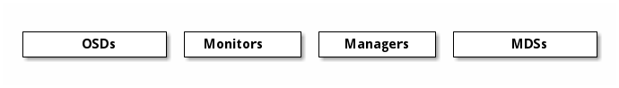

Notice
This document is for a development version of Ceph.
Ceph 简介
Ceph 可以用来向各种云平台提供 Ceph 对象存储、 Ceph 块设备服务， Ceph 也可以部署成 Ceph 文件系统。所有 Ceph 存储集群的部署都从配置 Ceph 节点开始、 然后是网络的配置。
一套 Ceph 存储集群需要这些：至少一个 Ceph 监视器、 至少一个 Ceph 管理器、 Ceph 对象存储守护进程 最少必须和 Ceph 集群里存储的对象副本数一样 （例如，如果 Ceph 集群里存储的对象有三个副本， 那么这个 Ceph 集群就必须有至少三个 OSD ）。
要跑 Ceph 文件系统客户端的话，还必须有 Ceph 元数据服务器。
Note
最佳实践是给每个监视器上都配置个 Ceph 管理器， 但这样做不是必须的。

Monitors: Ceph 监视器 (
ceph-mon) 维护着集群状态的各种运行图，包括 监视器运行图、 管理器运行图、 OSD 运行图、 MDS 运行图、和 CRUSH 图， 这些运行图都是很要紧的集群状态， 对于各种 Ceph 守护进程的相互协作必不可少。 监视器还负责管理守护进程和客户端之间的认证。 考虑到冗余性和高可用性，一般都要求至少有三个监视器。Managers: Ceph 管理器守护进程（
ceph-mgr） 负责持续跟踪运行时指标和 Ceph 当前的状态， 包括存储利用率、当前的性能指标、和系统负载。 Ceph 管理器守护进程还托管着基于 python 的插件， 用于管理和展示 Ceph 集群信息， 包括一个基于网页的 Ceph 仪表盘 。 为保障高可用性， 一般要求至少有两个管理器。Ceph OSDs: Ceph OSD （对象存储守护进程，
ceph-osd）负责存储数据、处理数据复制、恢复、重均衡、以及向 Ceph 监视器和管理器提供些监控信息， 如检查其它 Ceph OSD 守护进程的心跳。 为保障冗余性和高可用性， 一般需要至少 3 个 Ceph OSD 。MDSs: Ceph 元数据服务器（ MDS ，
ceph-mds） 为 Ceph 文件系统存储元数据。有了元数据服务器， CephFS 用户们才能执行基本命令，（像ls、find等等）， 避免了给 Ceph 存储集群增加过重的负担。
Ceph 把数据保存为逻辑存储池内的对象。根据 CRUSH 算法， Ceph 可计算出哪个归置组（ PG ）应该会持有指定对象， 以及哪个 OSD 应该会持有此归置组。 正因为有了 CRUSH 算法， Ceph 存储集群才能够动态地伸缩、重均衡和恢复。
推荐
开始把 Ceph 用于生产环境前，您应该看看我们的硬件建议和操作系统建议。
Brought to you by the Ceph Foundation
The Ceph Documentation is a community resource funded and hosted by the non-profit Ceph Foundation. If you would like to support this and our other efforts, please consider joining now.